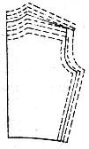
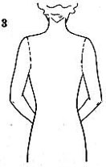
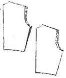
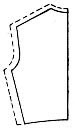
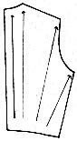
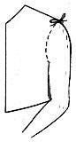

1936—Home Sewing Course
by Helen Hall
Series 7—Individual Fitting
Fitting Analyzed
Fitting is a problem
Fitting is a problem that confronts the tailor and the dressmaker, the ready-to-wear garments, and the home sewer. The various curves of the women's figure complicate the problem and make the closely fitting garment even more difficult to adjust to the individual than the garment with straight lines.
Older women are difficult to fit
Commercial patterns are made according to a basis of standard measurements that are more normal in youthful figures and as the variation from standard measurements often does not develop until later years, older women are more difficult to fit. Women of the stouter type accumulate an excess of flesh disproportionally. Some develop muscular or fleshy arms and remain small through the bust, while others of the same bust size may have very small arms and wide shoulders. Some develop large busts and retain the narrow shoulders, while others remain small in the bust but expand in the hips. These represent some of the variations from the standard measurements that make fitting especially difficult for the stout woman.
Figures differ
The standard figure is a fiction reached through striking an average after various measurements, and the individual who conforms to these measurements is fortunate. In actual life the individual inherits a certain boxy structure which determines the breadth of her shoulders, and the length of her arms and body. An unusual bony structure may require standard pattern alterations, but these alterations may not cover unusual proportions developed through an accumulation of extra flesh through the lower shoulders, arms, bust, or hips.
Fitting is important
Fitting is all important; style, fabric, color, and workmanship, all contribute to the smartness of the garment, but no garment is smart that does not fit the individual who wears it. The experienced sewer often becomes so discouraged with attempting to solve her own fitting problems that though she may desire to do her own sewing, she resorts through desperation to the ready-to-wear departments where fitters are employed to solve her problems.
Fitting a snare and delusion
Fitting is often a snare and a delusion. The delusion arises when the dress is tried on, for the dress may settle down around the shoulders and neck and appear to fit on the shoulders, but may bulge and draw elsewhere. The snare develops in attempting to eliminate the bulges and drawings and to fit the dress correctly.
Fitting deceptive
The law of gravity has been responsible for the dress resting smoothly on the shoulders, but do not assume that a dress fits merely because it rests smoothly around the neck. Neck fitting is of minor consideration compared to that of the shoulders, back, armholes, front, hips, and sleeves.
Looseness differs
Dresses are not all designed to fit with the same degree of looseness. Those designed to fit loosely should not be fitted too closely or the designed effect will be sacrificed. If, however, the dress does not produce the desired effect it may then be changed.
Illustrations explain type
The type of fitting will be evident in the pattern illustration. If the dress has been designed on loose lines, around the sleeves and arm holes, there will be folds in evidence on the illustration. If smooth lines have been designed, the illustration will have no folds. If the picture indicates smooth lines, the dress should be equally as smooth. And if it indicates looseness, the dress should fit equally as loose.
Some dresses fit tighter
Dresses of various types are also designed to fit with a varying degree of looseness. House dresses are made on looser lines than afternoon frocks, and evening gowns are fitted more closely than all other dresses. Dresses with close fitted sleeve lines cannot be fitted as snugly as sleeveless dresses, and heavy crepes and woolens can be fitted much more closely than sheer fabrics.
Fitting varies
The woman of normal proportions can fit her dresses closely, but the disproportionate woman must be cautious. The figure with the hollow chest should provide more fullness through the bust and chest than the normal figure of the same bust size. The woman with large hips should try to emphasize the bust in order to minimize the hips. The woman with a prominent abdomen should fit the hips more loosely than the normal figure in order to minimize the prominence of the abdomen. The fleshy woman often makes the mistake of being fitted too closely in her dresses and so presents an inflated appearance. The heavy bust lifts in the corseted figure when seated and if the dress or coat is fitted closely when standing it may be too tight when seated. Therefore, the stout woman should test the fitting of her dress in a sitting position.
Comfort, correct lines
It is often difficult to judge the correct fitting of a dress by the appearance only. The dress may appear to be perfectly fitted as to the correct placement of lines and the correct thread of materials and yet may be most uncomfortable.
No strain or bulges
A dress does not fit perfectly unless it falls into correct lines without constant adjustment, and is perfectly comfortable when the wearer is in motion. The wearer should be unconscious of any strain or bulges in the dress, and it should not burst out in the seams under ordinary strain.
Smoothness
The dress should fit smooth down the back and down the front, and in a dress with a set-in sleeve, it should fit smooth around the arm. A fitted dress should have no pouches and excess material at the waist line or through the shoulders and sleeves. It should fit sufficiently loose that the wearer can move without the movement causing a strained appearance in the dress, and so that she can remove it without splitting the material or bursting the seams.
No diagonal wrinkles There should be no diagonal wrinkles or crosswise pouches in any part of the dress.
The sleeves should be fitted to assure freedom of motion and the hips should fit closely but should not present a strained appearance.
Lines must be changed
The lines of the figure cannot be changed to conform to the lines of the pattern, therefore, the lines of the pattern must be changed to conform to the figure. This change in the pattern often makes it necessary to determine the correct placement of a new shoulder line, neck line or a new armhole placement.
If the figure is very short or very tall, the inner lines such as the yoke lines of the design must necessarily be lifted or lowered to retain the style lines of the pattern, and to make the dress becoming to the individual type of figure.
Set-in sleeves
General rules will be given for fitting a plain dress with a set-in sleeve, but the rules must be adapted to the material, the type of dress, and the individual who is to wear the garment.
Change shoulders
Although regular ready-made shoulder lines rest on top of the shoulder, custom-made garments are made with the shoulder lines one fourth inch back toward the back at the neck and one-half inch back of the top of the shoulder at the arm hole. It may be advisable even to change this rule to improve the lines of the figure.
Round shoulders have a tendency to appear straighter if the shoulder line is moved further back, and the over-erect figures assume a more normal posture if the shoulder line is placed further to the front. This change will be made after the shoulder lines have been altered to fit these types of figures.
Neck lines vary
Neck lines vary with the prevailing styles, but the back of the neck of tailored dresses, or dresses with collars, should rest well up to the bone at the back of the neck or on a line with a strand of beads.
Neck lines that are cut low in the back often give an uncomfortable feeling as though the dress were sliding off the shoulders. In this case the neck line should be raised. A neck line that bulges in the back is too high and will require raising the back and shoulders.
When making a pointed neck line in front, it is advisable to check the depth of the point as each woman has a becoming depth of the neck. Cut the neck a trifle too high and trim it out on the wearer if necessary.
Sleeves vary
Placement of the armhole also depends upon the design of the dress. The pattern illustration will indicate extra folds down the side of the arm or body if the armhole is low or loose. The rules as given determine the placement of the armhole of a set-in sleeve. Variations in sleeve designs will vary the rule.
Armhole size
The actual armhole measurement varies with the position of the arm. It will measure from one to two inches smaller with the arm raised than with the arm lowered. French sleeves are made to fit the extended arm, which gives a very small armhole and quite a straight sleeve cap. The commercial sleeve pattern is made for the lowered arm which gives a large armhole, which is necessary for average fitting of a wide variation in figures, as some figures have a low back armhole and some have a low front armhole. Making them both low produces a loose armhole but does not give a perfect fitting. Raising the armpit to fit the individual gives a more comfortable fitting.
Correct armhole placement
Correct placement of the individual armhole for a set-in sleeve will rest on the line of a string tied around the arm to the shoulder. Mark the line of the string.
Have the customer clasp the hands in front when marking the back and clasp the hands in the back when marking the front. The underarm should rest within one-half inch of the pit of the arm when lowered.
Armhole looseness
When the shoulders, chest, and cross-back are made wider or narrower, it will be necessary to change the line of the armhole. The armhole will also be changed when the size of the sleeve is changed. This change is frequent as there is a great variation in the size of arms. Mark the new armhole placement on the customer, but do not cut out the armhole until the dress is removed. Clip into the curves, placing the point of the scissors at the end of the point to be clipped and fold the edge of the seam back over the point of the scissors and cut the goods with the scissors in this position.
If the armhole of a fitted sleeve seems too tight never cut the sleeve under the arm but rather clip in the curve in front of the arm. One-quarter inch will relieve the strain. Do not hollow out an armhole to produce comfort. This often produces tragic results.
Various sleeves
Fashion changes the placement of the armhole. The drop shoulder places the armhole below the shoulder line and the short-shoulder places the armhole higher. The various styles of epaulet shoulders designed with the sleeve extending to the neck having a fitted underarm, the raglan sleeve with the loose underarm and the sleeve extending to the neck, the dolmen sleeve very loose under the arm, and the kimono sleeve cut in one with the body of the dress, all must be considered in fitting, and any changes in fitting will be made as directed later in these lessons.
Different backs
Special stress is placed on the importance of fitting the upper part of the back of the waist as there are many variations of the fitting of this portion of the dress, each variation in figure requiring a change in the pattern. The wide shoulders and the narrow shoulders; the narrow upper back and the wide lower back; the sloping shoulders and the erect shoulders; the erect shoulders and the stooped shoulders and the fat shoulders; each are to be fitted to a figure with large arms and small arms, which also varies the armholes on each. Each type combined with the others makes a vast assortment of different backs that will require pattern alterations.
Some patterns make provision for moderate letting out on the side and shoulder seams. When using these patterns be sure to note this extra allowance.
STANDARD MEASUREMENT COMPARISONS
Patterns are made from standard measurements
The standard basis of measurements is averaged from a large number of women who all measure the same bust size. The measurements of the lengths of the body and arms, the widths of the cross-backs, shoulder slopes, and sizes of the arms may vary for individual figures, but an average size must be secured to produce a commercial pattern at a small price. Some manufacturers make patterns to fit figures of several different types short women, women with large hips, women with the juvenile type of figure, etc. By studying your figure and making your selection from patterns designed for your type, you will reduce the necessary adjustment or perhaps eliminate it entirely.
Patterns differ
Even though the pattern manufacturers may agree on a certain proportion as to the comparative bust and hip size, each uses a different basic pattern for designing. Hence each pattern manufacturer fits a different type of figure. One make of pattern may fit a different type woman better than another make of pattern, not because the pattern is made on better fitting lines, but because the pattern fits her type of figure. On the other hand, the pattern which fits her may not fit her friends of the same bust size who is easily fitted in another make of pattern. It is not the pattern that is wrong, but the figure does not conform to the lines of the pattern. As it is impossible to alter the lines of the figure, the pattern must be altered to conform to the lines of the figure. The lines of the pattern must be altered if the dress does not fit.
Do not hesitate to alter the pattern
Correctly fitted dresses, that do not bulge and draw, cover the peculiarities of the figure far better than dresses made with no alterations.
Fitters alter dresses
Professional fitters in ready-to-wear departments do not hesitate to alter the lines of the dress, if it will improve it or if it will improve the effect of the dress on the customer. In fact the garment would often not be sold unless such an important alteration was made.
Alter wisely
Pattern alterations are equally essential but must be made wisely and with the understanding of the subject of fitting. The alterations which will herein be described will not all be used on one pattern, nor will they all be used for one figure. There may possibly be in one figure only one or two variations from the standard pattern. The full category of fitting problems will be explained in these pages so that the reader can determine wherein the individual figure varies from the standard measurements and how to correct the pattern.
Narrow shoulders
Individual measurements may vary in the width of the shoulders; the figure with narrow shoulders will find the pattern so wide that the shoulder seam will be too long, the back too wide, and the front possibly too narrow. Altering these lines will change the armhole but it will be necessary for good fitting.
Individuals with wide shoulders will find that the pattern is too narrow through the shoulders, cross back is too narrow, and the shoulder seams too short. The chest may also be too narrow and the front dart too wide.
Figures with square shoulders have the arms set high on the body, which shortens the pattern above the armholes. The commercial pattern will be cut too low at the underarm and must be lifted the full width of the shoulder seam across the back.
Sloping shoulders
Sloping shoulders also present difficulties in fitting and will require alterations in the pattern. Sloping shoulders place the arms so low on the body that the shoulder seam will have to be changed. This change often necessitates lengthening the back at the neck and then sloping the shoulder seam from this additional allowance made at the neck and shoulder seam, down to the correct line at the armhole. It is often necessary to let out the seam on the full length of the shoulder in the back, letting out more material at the neck of the shoulder seam than at the armhole. This alteration will lengthen the back and slope the shoulder seam as required.
Erect posture
The woman with very erect posture may find that the pattern is too long in the back and too short in front from the waist line to the shoulders. Pattern alterations to fit this type of figure would not only lengthen the front section but would also change the placement of the shoulder seam as the pattern would be shortened in the back at the shoulders.
Stooped shoulders
The individual with stooped or round shoulders must also alter the lines of the pattern often in a marked degree, depending upon the posture. The back of the figure will be quite curved, and it will be necessary to lengthen the pattern above the armhole after straightening the thread of material across the back, below the armpits. The pattern must also be altered in front for the stooped figure, as it will usually be too long from the armpits to the shoulders. This change will be made by lifting the shoulder seam at the neck.
Arms vary
Variation in arm measurements compared to the standard sizes in sleeves presents a need to consider sleeve pattern alterations. Arms vary in size in as great a proportion as do the hips for different figures of the same bust size. The size of the arm will vary from one-half to three inches larger or smaller than the arm that is supposed to be fitted with the sleeve enclosed with the pattern. The small woman who may have an unusually large arm, or the large woman who may have a very small arm, must each be fitted not only through sleeve alterations but with armhole alterations also.
Arms of one size vary
Fitting the upper arm does not solve all the fitting problem in sleeves, as arms of one size vary greatly in proportion. A pattern that fits the upper arm will not necessarily fit the lower arm, and this in addition to the variation in arm lengths, presents quite a problem in sleeve fitting.
Underarm seams meet
Modern sleeves are set into the armhole with the underarm seam of the sleeve meeting the underarm seam of the dress. Two-piece coat sleeves and intricately cut patterns may not conform to this rule, but when a pattern is used, the notches should be followed for correct placement.
Fullness at the elbow
The fullness that is placed at the back of the arm at the elbow in closely fitted sleeves is necessary for comfort when the arm is bent and also keeps the sleeve from twisting. The arm that is quite large at the lower arm in comparison to the size of the upper arm will need a greater fullness in the elbow of the sleeve; but the arm that is quite large in the upper arm and very small in the lower arm will require very little elbow fullness.
Skirt fitting closely related to waist fitting
Skirts that are attached to waists in the dress should be fitted in one unit with the waist. There should be no change in fitting at the waist line unless for a woman with a large abdomen. Therefore, the waist and skirt should be joined together before fitting. There will be little change in the skirt other than in the hips. The dress will be anchored at the waist and the greater part of the fitting will be above the waist line.
Rules for a plain dress
The fitting rules given will apply to a plain dress with the natural waist line fitted. The skirt will be closely fitted at the hips and the dress will have a set-in sleeve, fitted to the wrist. The fitting of all other styles will be based on the fitting of a plain dress.
Make first dress of checked gingham
The rules for fitting could be more clearly demonstrated if the first dress was made of checked gingham. The crosswise and lengthwise threads are very prominent in this material and will be easily followed and straightened as directed. The dress could be used as a guide for future fitting, carefully marking all alterations that were made.
Size of Pattern to Select
Select the bust size
Patterns are usually selected according to the bust size, as skirt alterations are easy to make. The majority of skirts can be altered easily on the side seams by making an extra seam allowance or by taking in the seam and it will not affect the style of the dress. But if the underarm seams of the waist are taken up or let out, the armhole will also be altered in the same degree and complications may develop that are difficult for the home sewer to solve. This makes it advisable to select the correct bust size and alter the hips.
Skirt patterns with the side seams so designed that the seams of the skirt do not meet the underarm seams of the waist, often produce a complication in fitting if the hip pattern is found to be too large. A complicated skirt design should therefore be purchased according to the hip size and should be altered at the waist.
Very large hips and small bust require thought
The woman with unusually large hips in proportion to the bust size will encounter less difficulty in general if she selects a pattern between the bust and hip size; that is a pattern a trifle larger than the bust and a little smaller than the hips. The alterations that will then be made will not radically change the lines of the pattern only on the side seams and will be easier fitted. The hips will be made larger and the bust smaller.
Figures with larger bust than hips select bust size
If the figure is larger in the bust than in the hips in relation to the pattern, it is always advisable to select a pattern the size of the bust and take in the hips. The hip lines are altered with less difficulty and the inner waist lines are retained.
Two crossbacks
 There are two crossbacks, and they both vary greatly from the standard pattern.
One is straight across the shoulders at the top of the arm and the other
is four inches lower. The lower one will sometimes be as much as three inches
wider than the upper measurement. Tucks can be taken in the back of the neck
to fit the curve or the armhole can be sloped.
There are two crossbacks, and they both vary greatly from the standard pattern.
One is straight across the shoulders at the top of the arm and the other
is four inches lower. The lower one will sometimes be as much as three inches
wider than the upper measurement. Tucks can be taken in the back of the neck
to fit the curve or the armhole can be sloped.
Straighten the altered side seams by drawing a straight line from the hip to the bottom of the skirt on the seam. Circular skirts will be altered in like manner but will require straightening on the side seams more than a skirt of straighter lines.
Fit the Lines of the Body
Fitting curves
The correct method of fitting conforms to the curves of the woman's figure, often fitting at the natural waist. The rules can be modified to conform to the changes in fashion or to individual taste as to looseness or tightness of the garment, but these rules will be governed by the amount of alteration made at the underarm seams, for these seams control the looseness or tightness of the dress.
Definite rules will be given for the elimination of any pouches, puckers, or drawings in a dress and should be followed as given. Following these rules straightens the thread of material on a garment, thus making it comfortable whether the dress is loose or tight fitting.
Spreading the pattern cannot fit curves
The conventional method of fitting the figure by splitting and spreading the pattern will be used only to lengthen certain sections but cannot be employed for fitting the curves of the figure or for fitting posture. This method of pattern alteration may accomplish the purpose of "not altering the lines of the pattern" but does not produce the result desired by the customer, namely: "fitting her figure" and making the dress comfortable.
When the pattern is split lengthwise and spread crosswise to enlarge any one of its crosswise measurements, the spreading not only enlarges the measurement desired, but also enlarges every other crosswise measurement on that pattern section.
For example: If the back of the waist is split and spread from the waist line to the shoulder seam to enlarge the crossback, the crossback is not only enlarged, but the bust and waist measurements are also enlarged to a much greater degree.
If the waist is not cut in one with the skirt, the waist line of the bodice will be enlarged to such an extent that it will be much too large to match the notches of the waist line of the skirt.
Small darts cannot be satisfactorily taken in the shoulder seams to shorten them, as the pattern will not lie flat and it will narrow the crossback.
 All measurements are enlarged
All measurements are enlarged
The same complication will be found even to a greater degree when a full length pattern is split and spread from the hem line to the shoulders to enlarge the hips. This enlargement will not only enlarge the hips but will also enlarge all other crosswise measurements, including the upper and lower crossback, bust line, waist line, and the lower edge of the skirt.
It is not necessary to enlarge the whole pattern to be able to enlarge one measurement. The correct alteration will also produce much better results.
Fit at the side seams
Patterns should be altered only on the measurements that require changing. All alterations except those in length should be made on the side and shoulder seams. The length of a pattern should be tested and adjustment made, if necessary, before the fabric is cut. If your pattern does not provide sufficient width of seam for letting out the garment, it will be wise to make an additional seam allowance on the sides, armholes, shoulders and neck, and then mark the sewing line by pressing the seams over the pattern as previously described. This will give a perfect line to follow in letting out or taking in from the original basting.
Measurement Chart for Dressmaker
Name_______________________________________________
Address_____________________________________________
Phone number______________________Date_______________
Pattern number and make________________________________
Dates of appointment__________________________________
Full length in center back __________________________
Underarm depth ________________________________
Waist length in center back ________________________
Depth of armhole at center back
(chest tape
around body) ____________________________
Waist front center back of neck ____________________
Upper crossback at shoulders _____________________
Lower crossback four inches lower _________________
Bust at fullest part ______________________________
Waist where the belt is worn ______________________
Hips: eight (8) inches below waist __________________
Thighs: four (4) inches below the hips ________________
Sleeve length at the back edge _____________________
Upper arm at fullest part __________________________
Below elbow with flexed arm ______________________
Measurements and How to Take Them
Accurate measurements of the body can be secured only with the dress removed, unless the dress is pinned closely around the armholes. The depth of the armhole in the back is very important for comfortable fitting and this measurement can be secured only from a straight line across the back from one armpit to the other, and not from the armhole of the dress. (1)
This measurement can be secured accurately if a string is tied across the chest and across the back well up to the armpits. The string must be straight across the back; it will also extend across the chest in front. (See directions for measurements.) It can be termed a chest tape. (2)
The two crossbacks are also important and should be taken with the dress removed, as many dresses have incorrect armhole lines. A string can be tied around each arm to secure the exact line if so desired (3). A pencil mark can be made on the flesh, following the string.
A pencil mark should also be made on the body on the bone at the back of the neck, as there are several measurements taken from this point. The back length; armhole depth; waist length in back, and waist length in front.
The full length of the dress is taken only in the center back. All skirt alterations in length will be checked from the back alterations.
Full length—taken from the bone at the center of the neck in the back to the hem line. (4)
Waist back—taken from the bone at the center of the neck in the back to the waist line in the back. (5)
Underarm depth—from pit of arm to waist line. (6)
Armhole depth—length from the bone at the center of the neck in the back to the tape across the back and chest. (7)
Upper crossback (see illustration, first page). Measure straight across the back from shoulder to shoulder. Measure from the top of the shoulder bones which are plainly left. If marks have been made on the body from string lines around each arm, then measure from these lines. The tape will be about two inches below the neck line in the center back. (8)
Lower crossback—four inches below the shoulders. Measurement is taken with the hands crossed in front. If pencil mark has been made on the body from the string line around the armholes, then measure across the back between the lines. If the line was not made, feel where the arm curve begins and measure from this point. (8)
The well-fitted armhole in the back eliminates much of the discomfort of the dress and will prevent sleeves from bursting out in the back.
Individual figures vary greatly in this measurement and each should be checked for perfect fitting and comfort.
Waist front—measure from the center of the back of the neck, over the shoulder, down over the bust and straight to the waist under the bust and not to the center front. (9)
Bust—tape slopes upward in the back. Stand back of the customer. Place the right hand on the 15-inch mark, reach under the customer's arms and catch the tape at the 15-inch mark with the other hand. Then place the tape on the bust and then slide the fingers along the tape to the back. This will prevent the tape from slipping off the full part of the bust. Lift the tape upward to within two inches of the underarm and take the measurement easy. Add from two to four inches to this measurement: two inches for large figure, four inches for small, flat figure. (10)
Errors—a low-swung bust measurement as taken by one's self gives a brassiere measurement and will be too tight for a dress.
Waist line—measure the waist line loosely where the belt will be worn. Add one inch. (9)
Hips—measure eight inches below the waist line, loosely. Add one inch for loose fitting. (11)
Thighs—measure four inches below the hips loosely. Add one inch. (12)
Sleeves Sleeve length at the back—measure the arm flexed, from the bone at the top of the shoulder, down, over the elbow to the bone at the wrist. (13)
Upper arm at fullest part—measure the fullest part of the upper arm. For large arms, add one inch. For small arms, add two inches. For all large arms with fitted sleeves measure the arm above the elbow with the arm flexed. (14)
Below the elbow—flex the arm; measure the fullest part of the arm below the elbow.
Fitting Tissue Pattern to Measurements
The Set-in Sleeve
Use a colored pencil to mark all altered lines on the pattern. All alterations on the pattern or on the garment should be made on the side seams and not on the joining seams of the sections of the design. The garment will be joined and then fitted as though the garment were cut in one section in the front from neck to hem and in one section in the back.
It is necessary to pin all the sections of the front of the pattern together and all the sections of the back together before fitting. The waist remains separate from the skirt when the pattern is fitted.
The back is fitted first; pinning in any pleats, joining any yoke sections or overlapping any double-back sections.
Fit the armhole depth
The back pattern is now in one piece. Fold the back down at the underarm at the sewing line and not at the edge of the pattern, keeping the center back lines together. Measure the depth of the upper part of the back pattern from the neck to the folded edge. (7)
If the pattern is too long from the neck to armpit, fold a tuck through the pattern across the back to shorten it to the desired length.
If the pattern is too short, split the pattern across the back and set in a piece of paper so as to make the pattern the necessary length.
For example: If the individual measures seven and one-half inches and the pattern measures eight and one-half inches, then take up a half-inch tuck across the back of the pattern from center back to armhole. This will shorten the upper back one inch.
If the individual measures nine and one-half inches and the pattern measures eight and one half inches, split the upper back pattern from center back to armpit and set in a one-inch strip to give it the extra length.
 Square shoulders usually require shortening the top of the pattern from
the armpit to the neck. It can be shortened by taking up a fold or tuck in
the pattern between the back and the armhole or by pencil-marking a new neck
and shoulder. An extra inch should be allowed on the shoulder seam at the
armhole to be able to make the shoulder seam straighter from neck to armhole
if necessary. (See rules for fitting.)
Square shoulders usually require shortening the top of the pattern from
the armpit to the neck. It can be shortened by taking up a fold or tuck in
the pattern between the back and the armhole or by pencil-marking a new neck
and shoulder. An extra inch should be allowed on the shoulder seam at the
armhole to be able to make the shoulder seam straighter from neck to armhole
if necessary. (See rules for fitting.)
Sloping shoulders, round shoulders, stooped shoulders or fat shoulders often require lengthening this line. Slash the pattern from center back to the armhole and set in a strip of paper the necessary width to make the back the correct depth. The shoulder seam may also be taken up at the top of the arm to give a more sloping line. The pattern must fit the back at the top of the pattern.
Crossback
Measure across the shoulders, on the half pattern from the center back to the armhole at the top. The tape will rest two inches below the neck line at the center back. The lower crossback should also be measured and checked before any alterations are made on the upper crossback. Place an extra paper for additional width or pencil-mark a narrower crossback at the top.
Also, measure the lower crossback at four inches below the point of the shoulder. Measure the pattern at the beginning of the curve of the underarm. Many full backs are quite wide at this point and the pattern may require widening only at the lower crossback. All alterations will be made at the armhole, pasting an extra paper for more width, or marking in on the pattern for a narrower back at this point. The lower crossback is seldom more than one-half inch narrower than the upper cross back but may be much wider.
If the lower crossback is wide and the upper back is narrow, tucks can be taken at the back of the neck to take up the additional material. After the dress is tucked, it should measure the correct width, allowing the material to spread at the lower crossback.
If the individual waist is short or long from the underarm to the waist line in the back, the pattern must be altered to fit. The short waisted person will require an even tuck across the pattern from the center back to the underarm. The long waist will require slashing and spreading the pattern at this line.
The front
Pin all the sections of the front of the waist together, crushing in any gathers or drapes to match the notches given on the pattern. Pin on any yoke sections and overlap and pin any open front sections, matching and pinning down the center front line of the pattern. The front of the waist is now in one piece. Pin the shoulder seam of the back to the shoulder seam of the front; place the pattern flat on a table with the underarm seam open.
Measure the pattern from the back of the neck down over the shoulder, over the bust and straight to the waist, measuring three inches from the center front at the waist line.
If the figure is over-erect, or has a full bust, the pattern may be short. This will also indicate that more dart is required at the underarm. Therefore, if the pattern is short, slash it from the center front to the under-arm seam at the bust line and set in the necessary width. Some of this additional material or dart at the seam can be eliminated at the waist line with a curved edge at the waist line. See illustration.) Or, the extra underarm length will be taken up in a dart.
The figure with the flat chest will require shortening the pattern above the bust line and also above the armhole. Take an even tuck across the pattern at the chest line from the armhole to the center front.
If the figure has a full bust, or is over-erect, extra allowance should be made at the armhole. (See rules for fitting a plain dress.) The armhole can be blocked out and fitted on the figure, as all armholes vary greatly. A definite amount cannot be given. The waist will be fitted from the waist line upward.
If the pattern has a shoulder dart, the extra allowance in the armhole will be made at the shoulder seam, pasting on from one to three inches of paper for a wider dart, sloping to the curve of the front of the arm. If the dart on the pattern is at the underarm, or there is no dart in the pattern, then an extra dart will be necessary at the underarm seam and the allowance will be made at the lower edge of the armhole, allowing from a half inch to two inches, depending upon the size of the figure. This extra material, either on the shoulder or at the underarm, will be drawn back into a dart to fit the figure. (See rules for fitting a plain dress.) The pattern will be matched on the original lines below the bust line.
Underarm length
The short-waisted figure may be so flat and short-waisted that it will require shortening the pattern by taking up a tuck across the front from' the center front to the underarm seam. The tuck will be made so as to keep the center front line straight.
The long-waisted figure will require lengthening the pattern at the underarm by slashing and spreading the pattern at the same line or extra allowance can be made at the waist line. This allowance must be made before cutting the dress.
Bust size
Pin the back and front sections together at the underarm seam. Do not join the shoulders. Flatten the pattern on the table and measure it across the bust line at two inches below the armhole. sloping the tape slightly upward in the center back, and down in the center front.
Check this measurement with the individual measurements with the extra inches allowed as directed in taking measurements. This extra allowance is required on all dresses with sleeves, even for close fitting. (Remember that the pattern represents but one-half of the measurement.)
Too large
If the pattern measures too large, take up the underarm seam until the pattern measures correctly (with the additional allowance necessary, 2 to 4 inches extra on the half pattern). If the bust is too large the armhole will also be smaller but will later be fitted as directed for the dart fitting. The seam is usually taken up the same on both back and front.
Too small
If the bust is too small on the pattern, spread the underarm seam until the pattern measures the correct amount and paste extra paper to the front section. Pencil mark the new sewing line as it is pinned to the back side seam. Block out the armhole. (See fitting.)
On very large figures it is often necessary to allow several inches to the front side seam section. This will throw out the armhole, as it will be too large. Block out the armhole as directed in the lesson on fitting the plain dress and fit a new armhole on the individual. One well-fitted front section can be retained as a guide pattern to use in altering all other patterns.
Sleeve
Measure the width of the sleeve pattern at the underarms at the widest point. Check the size of the individual arm. A closely fitted sleeve for the small arm usually measures from two to three inches larger than the arm. The large arm requires at least one inch extra allowance for freedom of motion. If the sleeve is too large or too small, make one-third of the alteration down the center of the sleeve on a straight line to the elbow, and the other two thirds on each side of the sleeve, taking one third from each seam. This will retain the sleeve cap. The armhole has already been altered and the sleeve should fit the armhole.
Sleeve length
Shorten or lengthen the sleeve as required for the individual. Make the alteration at the elbow. If the arm is short in front and full at the back, take up more at the front of the sleeve and less at the back. This type of arm requires a great amount of fullness at the elbow. (See sleeve problems.)
The skirt
Pin all the front sections of the skirt together; shorten or lengthen each section to the required measurement, similar to sleeve alteration. Keep all tucks or slashes straight across the pattern from the front edge.
Join all the back portions of the pattern, making any length alterations necessary.
Match the center front to the center back of the pattern, matching the lower edges. Measure the waist line. If too large, mark off an equal amount from both the back and the front. If too small, take from the back and front side seam an equal amount. Pencil mark on the pattern for the sewing line. Measure seven to eight inches below the waist line for the hip size, measuring straight across the pattern at this point. The depth of the hip should be measured the same as the individual measures, depending upon the height of the person.
Remember: the pattern represents only one half of the figure. If the hips measure thirty-eight inches with the inch allowance, then the half pattern should measure nineteen inches. If more should be added, make an equal alteration on both the front and the back section.
Large hips
If the hips are large, and the pattern you are using does not provide a wide seam for letting out the garment, pin paper to each side the full length of the seam.
Measure across the hip line and enlarge both seams the same amount, gradually sloping the line to meet the waist line just marked. If the hips are made smaller, the line must also be marked.
Exceptions
The figure with the large waist line in proportion to the hip size will require most of the additional paper pasted to the front of the pattern on the side seam, with possibly no additional allowance on the back of the skirt.
The figure that is large in the back and flat in the front at the hip line, will require more of the seam allowance on the side of the back and none on the front.
Large thighs will require an equal distribution of the allowance. The figure with the large bust and small hips will have the seam taken up even on both back and front.
Epaulet raglan sleeves
All sleeves that extend to the neck line will be fitted in like manner except that all alterations will be made on the front and back sections and not on the saddle of the sleeve.
Most of these sleeves do not fit closely at the armpit. This must be taken into consideration when fitting this type of sleeve. It is very important that the depth of the raglan or epaulet sleeve is sufficiently deep in the back from the neck to the armpit. A short sleeve at this point will draw the sleeve back and be most uncomfortable. Follow the rules for fitting the back of the set-in sleeve and let out or take up above the armpit on the waist only. Make no alteration on the shoulders of the sleeve. Alter the lengths as required.
Summary of Fitting Tissue Patterns
Pin all the sections of the pattern together all the waist front, all the waist back, all the skirt front, and all the skirt back. Also pin the sleeve sections together.
All alterations will be made on the side seams unless the lengths are changed. These changes should be made first.
- Fold down the center back at the armhole to secure the depth of the
armhole in relation to the back of the neck.
- Check the depth of the pattern from this line to the neck, and make
it correspond with the measurement of the individual as taken above the armhole.
- Measure the pattern across the back between the searing lines or the
armhole; measure both crossbacks.
Mark a narrower crossback if necessary or paste on more paper for a wider back to make the tissue pattern the same measure as the individual in both the upper and the lower crossback. Mark with colored pencil.
- Measure the underarm seam. Shorten or lengthen this line if necessary.
This seam may be lengthened, but is seldom shortened.
- Open the underarm seams, then pin the shoulders together. Measure the
length of the front and back from the center of the back of the neck on both
measurements.
If the front is too long, lift the front by taking a tuck across the chest from the center front to the underarm seam. If the individual is short-waisted, also take a small tuck below the armhole from center front to the underarm seam.
If too short, lengthen the pattern below the armhole only, never at the shoulder, unless a small amount for a sloping shoulder line.
Make extra allowance in all armholes for armhole fitting if there has been a great change in the pattern. (See lesson on fitting darts.)
- For the bust fitting, pin the back and front together at the underarm
seam only. Measure the pattern across the bust line two inches below the
armpits, slightly sloping upward in the center back.
Add more seam to the front if too small; take up evenly on both back and front if too large.
Be sure to allow two to four inches to the individual measurements to fit the pattern.
Sleeve
- Measure across the top of the sleeve. If too small, slash the sleeve
the full length down the center and add one-third of the amount to the
center and the remainder equally on both side seams.
If too large, reduce the size in the same proportion.
Skirt
- Lengthen or shorten the skirt by taking up a cross tuck from center to side seam, or splitting and spreading the pattern an equal width.
Waist Hips
- Place the center front and center back together, matching the lower
edges at the hem line. Measure across the waist line. Add one inch extra
to the individual measurements when checking the pattern.
Half the pattern will represent half the body measurement.
Increase or decrease the size equally on both the back and front sections. Mark all alterations with a colored pencil.
Continue any hip or thigh alterations down the full length of the skirt the same amount as altered at the hip line.
Cutting from a Pattern by Making Extra Allowance
It is advisable to always check the pattern lengths and widths to assure ample material for fitting. If, however, the figure does not vary greatly in length, the pattern may be fitted on the figure by cutting with extra seam allowance.
This type of fitting requires an assistant.
Allowances to make
There will be no fitting changes on the inner lines of the dress; all the alterations will be made on the side seams, shoulders, and armholes. As it may be necessary to let out the seam to secure more length or width, there should be an extra seam allowance. An extra seam width is usually sufficient, but if more than this is required it may be necessary to buy a larger pattern. When patterns already have an extra wide seam, more allowance may not be necessary. It is advisable to purchase the bust size, if possible. If the figure has unusually large hips, make an even wider seam allowance than is directed. If the back is unusually broad or long, make a wider seam allowance across the back and at the depth of the pattern at the neck in the back.
Prominent bust allowance
The figure with a very prominent bust and narrow back will need to use more material in the armhole for fitting. For this figure it will be advisable to merely block out the armhole as illustrated, marking the original armhole curve but not cutting the material except as slashed to the curve in front of the arm. If the dress has a shoulder dart it will possibly be necessary to make the shoulder dart much wider so as to remove the pouch at the armhole. The wider dart will require more material, which must be furnished by the extra material that was allowed at the top of the armhole. As this extra width is often much more than could be allowed on a wider seam, it is far better to block out the armhole, use the amount of material necessary and then mark a new armhole after the dart is fitted. Marking the original armhole with a crease and slashing into the curve of the armhole as illustrated will permit the dress and the armhole to be fitted perfectly.
Armhole allowance
If additional armhole fitting is necessary, and a shoulder dart is not desired, the extra material blocked out at the lower part of the armhole will be drawn down into an additional dart at the underarm seam.
Sleeve allowance
If the arm is extra large, and the pattern does not offer sufficient seam, make a wider seam allowance on both side seams of the sleeve. Also allow an extra half-inch on the sides of the sleeve cap but not at the top.
As the sleeve is difficult to reshape at the cap, it is advisable to purchase another pattern a size larger or smaller, whichever is necessary for the arm, and use the new sleeve as a permanent guide for fitting other sleeves. This sleeve should be fitted at the lower arm.
Allowance in the back
Measure the width and length of the back. If there is any question about the ampleness of the pattern, cut wide seams so that you will be prepared to widen the crossback or drop the waist at the center back or drop either end or both ends of the shoulder in the back, if such adjustments prove to be necessary.
 Retain the sewing lines
Retain the sewing lines
The original sewing lines should be marked so as to space all alterations evenly. When placing the pattern on the material, place all pins along the sewing lines so that the pin will rest in the fold of the seam as it is pressed over at the sewing line to form a crease. The pattern should be pinned to the folded goods so as to crease both sides of the dress at the same time. Place the pattern side down on the press board and press the seam back at the sewing line, creasing both edges of the material. All darts, tucks, pleats, hems, folds and centers should be crease marked. For complete instructions see the sewing lesson on "Marking Sewing Lines."
Preparation for Fitting
Assume that the dress has been cut with the additional seam allowance on all underarm and side seams of the skirt (unless altered to the exact size), waist, and sleeves and also on the shoulders and armholes and the seams have been creased on the original sewing lines ready to be basted.
The dress will be basted together in three units--the complete back with the waist and skirt basted together, the complete front with the waist and skirt joined at the waist line, and the sleeves basted together for fitting. The waist and skirt are not basted separately unless they are to be worn separately.
If the waist or skirt is of a symmetric design, and has one side overlapping the other, the sections should be matched down the center and basted together as a complete unit for fitting.
A dress should be fitted with both sleeves basted into the dress, as one sleeve does not permit the back to be properly tested for strain. It requires both sleeves for proper fitting.
The dress will be fitted right side out. It is impossible to secure the right effect when the garment is fitted wrong side out. The underarm and shoulder seams, however, will be pinned together with the seams extending on the right side. After the dress is fitted and removed, the side seams will be creased first to one side and then to the other side to secure a correct line for basting, after which the pins are moved. The dress will then be sewed together on the creases.
If the figure is unusually large in the hips and waist, it will be advisable to pin the dress together, letting out some of the extra seam allowance on the hips or waist before the dress is tried on, so as not to strain the material.
Special attention is given to the fitting of the depth of scye; the depth of the dress in the back from the neck to the line of the armpits, taken on a straight line across the back. This measurement varies in all postures and in most figures, and should be taken into consideration when fitting, as a misfit in this portion of the dress produces many wrinkles, pouches and drawings, and much of the discomfort of the garment. The fitting of many garments could be improved if this section of the dress were altered even if the dress had been completed.
Fitting the Plain Dress
A dress must be anchored at the waist line and fitted upward rather than hanging the dress from the shoulders and drawing out the pouches downward. All sections of the waist and skirt will be fitted upward and downward from the waist.
The waist line is fitted first, adjusting it to the desired fitting for the individual. If the waist of the figure is larger than the pattern, the extra seam allowance will be used, and the seam let out an equal amount on each side, measuring from the original sewing line. If the waist of the figure is smaller than the pattern, take up the seam equally on each side, measuring from the sewing line as creased.
It will be necessary to open the waist at the left underarm seam on figures that have small waists, if the dress is made with no other opening. This opening at the side will permit the dress to be removed without undue strain on the seams. There is a great strain placed upon all seams of a dress if it is removed over the head. Many sleeve seams break out in the back when the dress is removed. This may explain why it is necessary to fit the sleeves with the arms clasped in front.
Fit the hips, but do not fit too tight. A figure with a prominent abdomen should have the hips fitted sufficiently loose to permit the dress to fall in a straight line down the front from the waist when viewing the figure from the side. Closely fitted hips emphasize a large abdomen.
If the side seams of the skirt are altered, the same amount of alteration should be made the full length of the skirt.
If the hips are let out one-quarter inch, the full length of the skirt should be enlarged the same amount on the side seams. If the hip seam is taken in, the same amount will be taken in the full length of the seam. The figure with larger hips will require the same additional width at the lower edge of the skirt as it let out in the side seam; the figure with the smaller hips will require the same amount reduced from the lower edge as is reduced at the hips. Make all alterations measuring from the original sewing lines. If the right and left sides of the figure are different, it will be noticed in the side seam of the smaller side. The seam will not hang straight and will bulge. Adjust the line until it hangs straight.
The side seam of the skirt should hang straight, in a perpendicular line with the floor, and directly on a line dropped from the underarm. The underarm seam of the skirt meets the underarm seam of the waist unless otherwise designed.
Hip fitting should be tested with the customer seated. Full thighs spread when seated and the dress may be too tight below the hips, especially in dresses with long closely fitted lines. The fitting should be tested on the seated figure straight across the lap at the body line.
It is advisable to make longer pleats or higher fullness in figures with large thighs. Otherwise the side seams of the skirt must be let out, increasing the fullness through the thighs for spreading room when seated.
After the waist line and skirt have been fitted, the back of the waist will then be fitted. If the underarm seam has been properly lengthened or shortened, as directed in pattern alterations, the sewing line of the arm curve should rest up to within one-half inch of the pit of the arm, when the arm is lowered.
Straighten the crosswise thread of material across the back below the shoulders. If checked gingham is used for the first fitting, the thread of material in the checks will be very noticeable. If the thread of material draws upward, open the shoulder seams at the neck and allow the goods to drop into a straight line from side to side.
The pouch of material that appears at the waist line in the back on closely-fitted dresses will then be fitted out. It is impossible to fit the concave surface of the back with a flat piece of material. If vertical darts in the back of the skirt are not used, it will be necessary to tuck under the pouch at the waist line and pin out the crosswise dart on the straight line with the belt. Removing the pouch in this manner produces a downward curved edge on the skirt and an upper curved edge on the waist. When the two curves are sewed together in the waist seam, it will fit the curve of the back.
Vertical tucks may be used on a dress that is cut with the waist and skirt in one piece. Extend the tucks both above and below the waist line on both sides of the center back. This method is generally used when fitting a dress without a belt or when fitting stripes or plaids; this method retains the straight line of the stripes across the hips.
The back has now been fitted from the waist line up to the armpits and will require fitting above the armholes. Smooth the material up the center back and to the shoulder seams at the neck. Let out or take up the seam to fit.
Smooth the material upward and outward toward the shoulders, lifting the material at the armhole so as to eliminate any possible pouch. The square-shouldered figure will require lifting the whole back shoulder seam. The stoop-shouldered figure may require only lifting the seam at the armhole and even possibly lengthening the center back.
Usually the shoulder seam of the back is one half inch longer than the shoulder seam of the front, but in fitting the stooped shoulders this fullness may be increased. If the extra fullness is more than can be eased out in the seam, the surplus can be eased over toward the center back and taken up in tucks at the back of the neck.
The necessity for darts in the front of a waist is often minimized. Darts are not only used to fit the curves of the bust but are also used to fit the receding lines of the shoulders on closely fitted garments. The necessity for darts can be seen by viewing any figure from the side. Notice that the figure is on a straighter line in the back from the waist to the shoulders than ,the front, but the thickness of the body, receding to the shoulders, produces a sloping surface in the front that requires a dart arrangement even though the bust may not be prominent. The straighter the back, the greater the necessity for darts.
Dart fittings are arranged in various places, often disappearing in the
design of the dress. Darts are placed on the shoulders, or under the arm
in a direct line from the bust to the underarm seam, either in a horizontal
line or sloping downward at an angle. If the underarm dart is large, it may
be divided into two or more darts as desired. More than one dart are more
becomingly placed at an angle.
in various places, often disappearing in the
design of the dress. Darts are placed on the shoulders, or under the arm
in a direct line from the bust to the underarm seam, either in a horizontal
line or sloping downward at an angle. If the underarm dart is large, it may
be divided into two or more darts as desired. More than one dart are more
becomingly placed at an angle.
Darts may also be worked out in various yoke effects, often with the joining seams cut on curved lines. Cowl necks, various draped effects, gathers or darts at the waist, all are used when fitting the curves of the figure. If darts are not used when necessary, the dress will pouch either at the front or at the armhole. This indicates the lack of sufficient dart in the garment.
Additional darts at the underarm when necessary
All garments except coats can be fitted with extra darts at the underarm if necessary. If the dress has a yoke seam extending to the underarm seam near the bust line, the seam can be fitted in to eliminate the visible dart. The same rule is followed at the shoulder, fitting in the surplus material into any seams of yokes or intricate cuts extending to the neck.
Shoulder dart
Shoulder dart fitting indicates any front fitting above the bust line, with the dress fitting smooth down the front, across the front at the waist line, and smooth around the armhole. There should be one inch ease in the front of the armhole for freedom of motion on all dresses with sleeves. It is, therefore, advisable to provide for this ease before fitting out any pouch at the front of the arm curve. Pin in a half-inch dart in the armhole which will be made with one inch of material. This will not be sewed as the pin will be removed when the sleeve is set into the armhole. Smooth the material upward from the armpit, around the arm curve and up to the center of the shoulder seam.
If there is not sufficient dart arrangement, it will be necessary to use some of the additional seam allowance at the armhole, drawing it over toward the neck so as to remove any pouch at the front of the armhole.
Stoop-shouldered or hollow-chested figures often find it necessary to lift the front of the waist the full length of the shoulder seam, which will also require changing the neck line in front.
Underarm dart pulls down from the armpit
The underarm dart is fitted from the waist line upward in the center front to the shoulder and across the chest, lifting or lowering the shoulder seams if necessary. Pin in the usual one-inch ease in the armhole as described for shoulder darts and join the underarm seams to the back for two inches down the seam. Then fit upward from the waist line on the underarm seam, joining the seam to the back and taking up the remaining pouch of goods that appears at the armhole and making one, two, or more darts at the underarm seam to match the back seam.
Sleeves
A plain, one-piece sleeve should be fitted well up to the pit of the arm in order to be comfortable, and the closer the sleeve comes to the pit of the arm the closer the dress can be fitted comfortably. A dress that is cut out low under the arm will be drawn up when the arm is raised, and not only will the dress draw across the top of the sleeve, but the strain will pull out the seams and draw the dress out of shape at the waist line.
There are various designs in loose sleeves which will vary the shape and size of the armhole, and in this case the armhole of the pattern will be followed, as the dress is not intended to fit closely under the arm and any pouches will not be noticeable. The folds illustrated in the pattern sketch will give this information, but the front and back sections must be fitted. A tested fitted sleeve pattern will indicate the necessary changes on all patterns.
Altered shoulder seams and refitted armholes usually require a new armhole placement. To mark the armhole, tie a string around the arm, pinning it at the bone on the shoulder. Mark the line of the string in the back as the arms are clasped in front, and mark the front with the hands clasped in the back. This will allow for freedom of motion in the width of the crossback and the width of the chest. The fitted armhole should rest to within one-half inch of the pit of the' arm. Remove the pin that has been holding the half-inch dart at the armhole curve in front (see direction for fitting darts), and the sleeve will be ready to set.
If an armhole seems to be too tight, clip into the front curve of the arm for one-quarter inch only. This extra amount will usually remove any strain. Never cut out under the arm to make an armhole larger. It will make the armhole larger but will also increase the discomfort of the dress and sleeve and will not improve the fitting of the garment.
Slide the sleeve into the armhole and pin it to the dress, matching the underarm seam of the dress to the underarm seam of the sleeve. Drop the arm to the side and adjust the top of the sleeve to the armhole so that there will be an equal amount of fullness on both the back and front half of the sleeve cap. There should be about three-fourths inch ease in both the back and the front of the sleeve cap to make it possible to fit the sleeve over the curve of the shoulder and to allow for freedom of motion. If the sleeve has no fullness in the sleeve cap, the sleeve will draw in the cap when the arm is brought forward.
If the sleeve is too large, take up the underarm seam, allowing from one to two inches more than the actual size of the upper arm. If the sleeve is too small, the extra seam allowance will be let out on the underarm seam of the sleeve.
As the arm hangs to the side, notice the crosswise threads of material. If the sleeve is too short from the armpit to the shoulder, the threads of material will draw upward in the center of the sleeve and should be dropped from the shoulder to permit the threads to straighten and eliminate the drawing in the sleeve cap. If there is not sufficient seam allowance at the top of the sleeve to permit it to be dropped the same effect can be secured by lifting the sleeve at the underarm seam.
Fitting the upper part of the sleeve does not solve all the sleeve-fitting problems. The lower arm often causes more difficulty than the upper arm. The lower arm is not always in proportion to the size of the upper arm in that the arm does not taper sufficiently to conform to the general rules of fitting. A plain fitted sleeve requires a dart or gathers at the elbow and the larger the lower arm the larger the dart. The shape of the sleeve varies on the back edge in fitting, as the back edge of the sleeve is let out or taken up more than the front edge.
When fitting the lower arm, raise the hand to the face so as to enlarge the lower arm to its fullest extent. The lower arm will then be fitted the exact size of the arm with no allowance for ease, the raised arm will indicate the exact size of the sleeve.
If the lower arm or elbow of the sleeve is too loose, take up the sleeve on the back edge with the arm bent. This will reduce the size of the elbow dart or diminish the fullness at the elbow. Let out the back seam if sleeve is tight.
The sleeve may also be too loose at the wrist. If an alteration is to be made, take out the surplus material from the back edge of the sleeve seam, permitting the front seam to remain the same. The close-fitted wrist requires an opening to permit the sleeve to be removed. If the opening is not desired at the seam, slash the sleeve for two inches on a straight line with the arm just above the wrist bone in the back of the sleeve. This would also be the line used for a long opening with buttons. This line is usually about two inches from the back seam of a fitted sleeve.
Sleeve fullness is eased out on the bias
The fullness in the sleeve cap is fitted out on the bias sections of the sleeve. The cap of the sleeve is flat for three inches across the top and for three inches under the arm, the fullness being eased out between these sections. Divide up the fullness on the back of the sleeve cap, with the sleeve cap folded under, pin the sleeve to the armhole on the customer gradually dividing the fullness. The sleeve will be basted in from the right side (see directions on sewing).
Mark alterations
Open the side of the dress so as to remove it without straining the seams, carefully marking the altered lines with chalk or pins. The length of the opening will depend upon the figure.
Noting alterations
After the dress is removed, carefully notice the chalk mark and changes from the original sewing lines. Write down the exact amount of change on each seam. These notations will be used later to alter other patterns of the same make. Alterations will then be made only on the seams that required altering on the test pattern. The remainder of the seams will not be altered from the original sewing lines.
Various makes of patterns
The same alterations will be required for the same individual on the same make of pattern, but the alterations may differ on other patterns. It will, therefore, be advisable to make the extra seam allowance on all side seams and shoulders of all patterns until a test has been made for individual fitting for that pattern.
Intricate shoulder fitting
Patterns with intricate shoulders will be handled somewhat differently. Epaulet shoulders and raglan sleeves are made with two shoulder seams, and while the fitting rules are the same, the difference should be explained. The shoulder section of the sleeve will not be altered. The alteration will all be made on the shoulder sections of the front and back of the waist rather than on the sleeve. If the back of the dress is too long, the change will be made by lifting or dropping the shoulder section of the back (not the sleeve). If the front needs to be changed, the shoulder section of the front (not the sleeve) will be lifted or lowered.
Seam allowance on intricate shoulders
Extra seam allowance will be made on the shoulders and underarm seams of the back and front sections, the sleeve will have only an extra underarm seam allowance.
Lift or drop the back or front sections by fitting upward to join the sleeve. Join the sleeve to the altered shoulder line.
Fitting Summarized
Use a mirror when fitting
Fit before a mirror, even when fitting others. The mirror will indicate defects in fitting that cannot be detected with the naked eye and will also give the effect as soon at a distance.
Back fitting
- Pin the dress sections together on the shoulder.
- Fit the waist line first. Fit the waist as closely as desired.
- Fit the hips.
- Fit from the waist line upward on the underarm seam.
- Lift the four back lengths upward from
(a) Waist to underarm.
(b) Waist to the center back.
(c) Waist to the shoulder at the neck.
(d) Waist to the shoulder at the sleeve. - Pin out a crosswise dart at the waist in the back to fit the concave surface.
- Tie a string around the arm for armscye placement
- Fit the two crossbacks, checking the correct armhole
(a) At the top of the shoulder.
(b) Four inches lower.
Front fitting with an underarm dart
- Fit upward in the front from the
(a) Waist to the neck in center front.
(b) Waist to the shoulder at the neck.
(c) Waist to the shoulder at the arm.
- Pin up one inch of material for looseness in the armhole in front (a
inch dart).
- Smooth across the chest to the arm-curve.
- Smooth around the arm, drawing the material downward until all the
pouch is taken out at the armhole curve.
- Pin the underarm seam of the front and back together at the armhole
and for two inches lower allowing two inches looseness through the bust.
- Smooth the underarm seam upward from the waist, pinning to the back
seam.
- Take up the remaining pouch into a dart at the underarm. Make two or more darts if necessary.
 Front fitting with shoulder dart
Front fitting with shoulder dart
- Fit upward at the center frond and to the shoulder at the neck.
- Fit upward at the under arm to the armpit with underarm seams pinned
together.
- Draw the material around the arm-curve, allowing one-half inch dart,
smoothing around the arm toward the shoulder. Clip the curve if a wide seam
has been allowed in armhole.
- Take up the pouch of material at the shoulder into the shoulder-dart.
- Make the back shoulder seam one-half inch longer than the front shoulder seam. Mark a new armhole placement by tying a string around the arm, follow the string with a chalk mark. Clasp hands in the back.
Sleeve fitting
- Pin the underarm seam of the sleeve to the underarm seam of the dress.
- Pin the sleeve at the shoulder seam, allowing an equal amount of fullness
both front and back of the sleeve cap.
- Clasp the hands in the front when fitting the sleeve in the back.
- Clasp the hands in the back when fitting the sleeve in front.
- Allow one inch freedom through the upper sleeve.
- Pin the sleeve together above the elbow.
- Pin the sleeve together at the wrist.
- Shorten the sleeve if necessary; usually above the elbow.
- Raise the hand to the face when fitting the lower arm.
- Let out the back seam (curved edge) if the sleeve is too small.
Skirt fitting
- Hips are fitted after the waist line is fitted.
- Side seam should hang perpendicular to floor.
- Side seam should drop directly below , underarm seam.
- Allow one inch freedom in hips (% inch on each side seam).
- Uneven hips will be evident in the hanging of the side seam.
- Take up looseness on low hip.
- Make side seam alterations equally divided, taking up an equal amount on both back and front on all alterations-let out the same.
Intricate designs
Intricate designs in sleeves are fitted by approximately the same rules. Fit upward for a fitted waist line. Lift the back, lift the front sections, and fit out surplus material, or let out seams on the front or back sections in preference to altering the sleeve lines.
Fitting Coats
Coats fit looser A coat should be fitted with ample looseness as it will be worn over a dress and will be lined, with even a possible interlining. This extra material must all be taken into consideration when fitting the pattern to individual measurements.
It is advisable to first fit a dress pattern to determine the necessary alterations, if any, then the same amount of alterations should be made on the coat pattern, as the pattern will be made with the necessary looseness for the average coat.
If the pattern does not offer sufficient width through the back or front or sleeves, extra allowance must be utilized on all side seams, the exact amount will be determined in the dress fitting. The crossback will be fitted according to the dress measurements without additional allowance for looseness over the amount allowed in the pattern.
If a dress has not been fitted previously, the bust, waist and hips should bi made at least two inches larger than measured for the dress fitting; this will only give looseness for average material. Heavy material with an interlining will require a four-inch allowance. The necessary amount of looseness must be judged by the individual, if the figure is disproportionate.